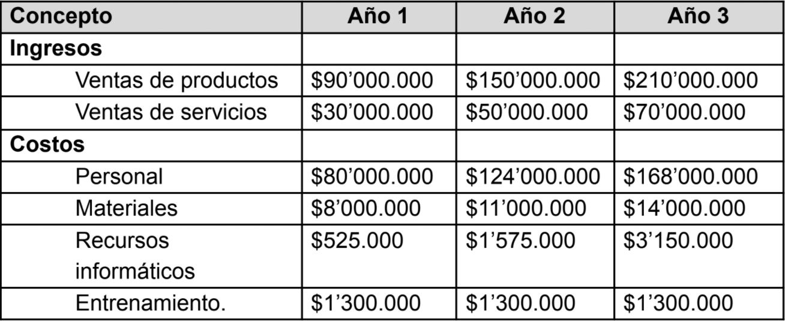
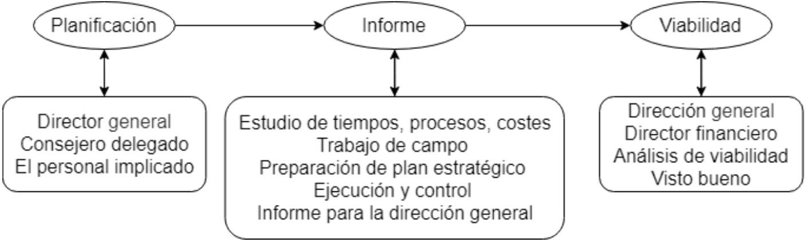

Estudio de Factibilidad
Estudio de Factibilidad
Resumen ejecutivo
En la revisión de documentos donde se da toda la información importante del desarrollo del proyecto, es fundamental tener una versión más simple que de claridad sobre los aspectos más relevantes del mismo.
Para atender mejor a nuestros clientes actuales y para expandirnos a nuevos mercados, necesitamos desarrollar e identificar los factores pre y pos proyectos que den mayor impacto a los productos y servicios que ofrecemos. Por lo que luego de identificar los factores que dieron origen a la necesidad del proyecto se determinaron los demás factores que impulsaron la investigación de factibilidad del mismo. Esto dio en la identificación factibilidad técnica, legal, económica, de recursos, de factibilidad operacional, temporal, etc. Con ello pudimos reconocer las posibles amenazas que podrían incurrir en riesgos del proyecto, entre ellos identificamos servicios de competidores más económicos, el no ser demasiado visibles, la falta presupuesto para el marketing, falta de confianza de los clientes, esto último en referencia al estudio de marketing. Con respecto a los demás estudios de factibilidad no encontramos mayores amenazas más que el hecho de tener los recursos necesarios para emprender la proyecto/empresa en un inicio, ya que ni él lo legal, ni en lo organizacional, ni el lo técnico encontramos dificultades mayores.
Antecedentes del proyecto
En esta sección se presenta una introducción de la visión del proyecto y sus orígenes:
-
Factores que dieron origen a la necesidad y al proyecto
El proyecto nació de algunas iniciativas planteadas en metodologías empresariales surgidas a través de proyectos de asignaturas vistas en la carrera ingeniería multimedia, donde pudimos evidenciar y de antemano conocer lo necesario para realizar este tipo de proyecto.
-
Factores impulsores de la investigación de factibilidad
Para determinar los principales factores para determinar la factibilidad de nuestro proyecto nos basamos en algunos dados por en la categoría de soluciones de software integradas CRM(Customer relationship management o gestión de relaciones con el cliente).
- Determinar las funciones que se desean automatizar
- Automatizar sólo lo que necesita ser automatizado
- Obtener el soporte y compromiso de los altos niveles de la compañía
- Emplear inteligentemente la tecnología
- Involucrar a los usuarios en la construcción del sistema
- Realizar un prototipo del sistema
- Capacitar a los usuarios
- Motivar al personal que lo utilizará
- Administrar el sistema desde dentro
- Mantener un comité administrativo del sistema para dudas o sugerencias.
-
Quién inició el proyecto (Persona u organización)
El proyecto inicialmente fue planteado por los estudiantes de ingeniería próximos a graduarse Diego Cortez Roa y Jonathan Garavito Chaparro como CEO (Consejero Delegado) y COO (Director General), posteriormente se unió Cristian Beltran Velosa como CFO(Director Financiero).
El proyecto y su contexto
Descripción del proyecto
Intiac crea productos accesibles para ser disfrutados con perspectiva innovadora y creativa, aplicaciones que conecten a las empresas con las personas buscando nuevas formas de ofrecer sus productos. Siendo estos principalmente soluciones en el ámbito digital orientadas a aplicaciones Web y aplicaciones 3D.
Alcance del estudio de factibilidad
En este estudio de factibilidad se espera obtener de los detalles que pueden impactar positiva o negativamente el proyecto. Dando especial énfasis a factores que pudieran poner en riesgo la implementación del proyecto.
Dentro de los resultados también se espera tener de manera clara y concisa la factibilidad de la empresa.
Factibilidad técnica
El estudio técnico que realizado en base a diálogos con el equipo del proyecto estimó que sería aconsejable la compra de recursos de servidores de alojamiento Web COLHOST4, servicios de AWS, software de modelado como Maya, y plataformas de desarrollo de entornos virtuales como Unity.
Lo favorable de la mayoría de estas plataformas es que poseen versiones para pequeñas startups y de aprendizaje que nos permitirá capacitar al personal de la empresa en estas herramientas sin elevados costos.
Se estiman gastos de capacitación y entrenamiento de $1,300,000.oo.
Maya Autodesk = $6’413.222.oo anual
Unity = $1’505.221.oo anual
Aws = $0.oo
COLHOST4 = $525.000.oo anual
Factibilidad económica
El propósito del estudio de viabilidad económica, es determinar los beneficios económicos del proyecto o sistema propuesto para la organización, en contraposición con los costos.
La premisa de los costos se basan en las estimaciones hechas por el equipo en base a tarifas en la cotización del desarrollo de productos y servicios digitales, asesorías. El siguiente cuadro resume el flujo de caja proyectado para los primeros tres años de operación.
Factibilidad legal
A nivel legal es importante tomar en cuenta lo siguiente, de acuerdo a lo señalado por MinCiencias, al otorgar beneficios tributarios a empresas que ejecuten proyectos de base de ciencia, tecnología e innovación, en alianza con un actor reconocido por el Ministerio de Ciencia, Tecnología e Innovación, estos beneficios constan de deducción de y descuento tributario por inversiones, crédito Fiscal por inversiones, ingresos No Constitutivos de renta y/o Ganancia Ocasional y beneficios Tributarios en proyectos de ciencia, tecnología e innovación.
Por otro lado el ministerio de hacienda y crédito público en el artículo 1 del decreto 260 de 2001 estipula que “debe aplicar la tarifa de retención en la fuente del 3,5% a los pagos o abonos en cuenta realizados por los siguientes conceptos:
- Realización de actividades relacionadas con el análisis, diseño, desarrollo, implementación, mantenimiento, ajustes, pruebas, suministro y documentación, consideradas como fases necesarias en la elaboración de programas informáticos.
- Diseño de páginas web.
- Consultoría en programas de informática.
- Servicios de licenciamiento y derecho de uso del software.”
Esta tarifa aplicará sobre el total (100%) del valor pagado o abonado.
Estados financieros
Balance General
Ver más →Estado de Resultados
Ver más →Factibilidad de recursos
Los recursos necesarios para la ejecución del proyecto son corresponden a infraestructura, personal y dependencias internas y externas, todos estos factores al pueden resultar en incremento de los costos para la organización y cambios en sus procesos, por los cuales deben considerarse.
Descripción del proyecto
- 1 Director de tecnología de sistemas
- 1 Director de Comunicación
- 3 Developers
Los gastos fijos en salarios se estiman en $80’000.000 anuales, incluyendo las cargas sociales.
Descripción del proyecto
Servidores web (COLHOST4 - $525,000)
Servicios aws gratuitos ($ 0)
Factibilidad de mercado
-
Descripción del proyecto
Edad: 25-50 años
Sexo: Masculino / Femenino
Estado civil: No aplica
Nacionalidad: Colombiano / Extranjero
Socioeconómico: Colombiano / Extranjero
Socioeconómico
Clase social: Media / Alta
Nivel de estudios: Bachiller o superior
Poder adquisitivo: Estrato 2+
Geográfico
Sur América
Psicográfico
Hábitos: Uso tecnológico constante
Estilos de vida: Sedentarismo
Opiniones: Uso de tecnología de forma informativa, recreativa y laboral
-
Analisis de competencia
¿Quién ofrece productos comparables?
Desarrollo web y de aplicaciones móviles al gusto del cliente.
¿Qué hacen bien tus competidores?
Ofrecer servicios de desarrollo web de alta calidad acorde a como se conocen los parámetros establecidos.
¿Cuántos competidores hay?
Actualmente se encuentran muchos competidores en el mercado, con desarrollo en especial freelancer.
¿Qué puedes hacer mejor que la competencia?
Ofrecer una nueva generación de experiencias, destacándose por su autenticidad, elaboración, además de ofrecer un buen SEO técnico en sitios web.
¿En qué se asemeja tu mercado objetivo al de tus competidores?
En el desarrollo web y creación de aplicaciones
-
Cliente objetivo
¿Con quién vamos a empatizar?
Emprendedores y amantes de la tecnología con oportunidades en la incursión digital
¿Qué necesitan hacer?
- Emprender
- Trabajar
- Hacer crecer su negocio
- Viajar
- Descansar
- Cuidar de su familia
- Pagar impuestos
- Pagar servicios básicos
- Planear su futuro
- Cuidar de su salud
¿Qué VEN?
- Televisión: noticias, novelas, publicidad, deportes, películas, canales nacionales
- Internet: videos, películas, redes sociales
- Oportunidades en el mercado
¿Qué DICEN?
- El servicio es muy caro
- ¿Qué garantías se tienen del producto o servicio?
- No es tan importante el emprendimiento digital
¿Qué HACEN?
- Trabajar
- Usar smartphones
- Usar computador de mesa
- Usar computador portátil
- Comentar en redes sociales
- Hacer compras por internet
- Buscar productos en internet para su compra
- Buscar en internet soluciones a problemas cotidianos
- Usan su smartphone como alarmas
- Búsquedas en google
¿Qué OYEN?
- Farandula
- Radio
- Recomendaciones de lugares por parte de amigos o familia
- Posicionar empresas en el mercado digital
- Uso de tecnologías para crear nuevos productos y servicios
¿Qué PIENSAN y SIENTEN?
Esfuerzos
- Perder su trabajo
- Perder su familia
- Entrar en quiebra
- No saber qué hacer
- Dar una mala impresión
- Estar desinformado
- No conseguir logros
- Tener enfermedades
Resultados
- Ganar dinero
- No trabajar
- Ser felices
- Tranquilidad
- Sentirse seguros
- Sentirse amados
- Familia saludable
- Sentirse libre
- Tener estudios
- Tener casa propia
Pensamientos o sentimientos que motiven acciones
- Miedo
- Envidia
- Angustia
- Odio
- Presión
- Desesperación
- Tristeza
- Dolor
- Deseo
- Vergüenza
- Felicidad
Factibilidad operacional
Para el desarrollo de la factibilidad operacional se realiza previamente:
- Una planificación en la cual se reúnen el director general, el consejero delegado y el personal implicado.
- Se realiza un informe de plan operativo en el cual se plantea realizar estudios de tiempos, procesos y costes acerca del trabajo de campo, preparación del plan estratégico y la ejecución y control.
- Finalmente se realiza un informe para ser analizado junto con el director financiero a fin de poder verificar la viabilidad del proyecto a través de una dirección general un estudio de viabilidad y un visto bueno por medio del director general.
Se evidencia en el siguiente diagrama el proceso que se acaba de mencionar:
Factibilidad de tiempo
Para el desarrollo de la factibilidad de tiempo se debe tener en cuenta a la factibilidad operacional a fin de estar acorde con los límites planteados en cuanto a manejo de tiempo del proyecto.
- Con el tiempo que se tiene disponible para construir un sistema proyecto se administra según lo generado en la planificación
- Para saber cuándo se va a desarrollar el proyecto se debe llegar a un acuerdo después de la verificación de este para comenzar el proyecto
- Se debe tener en cuenta que para las operaciones normales del proyecto se debe disponer con los Los desarrolladores percatándose del tiempo de trabajo
- Para el desarrollo de varios proyectos se debe tener en cuenta en la planificación sobre la realización de varios proyectos en simultáneo para entenderse de antemano el tiempo que se le dedicara para el desarrollo
- Los costos recuperados se deben medir según un análisis de Mercado del proyecto y de acuerdo a esos datos se estima un tiempo para la recuperación de los mismos
Para los casos de desarrollo en los que se llegue a exceder el tiempo Límite se debe realizar una reunión a fin de resolver las dudas como el caso del exceso de tiempo para generar el proyecto, se debe realizar una reunión con los desarrolladores involucrados en el retraso, de la misma forma para los casos la recuperación de costos del proyecto se debe informar por medio de una reunión al cliente y al director sobre extender el plazo de tiempo o cerrar el proyecto, de acuerdo al estudio de mercado planteado se revalúa en caso de permitirse extender el tiempo en cuanto se debe permitirse esperar para cubrir los costos como un proyecto viable